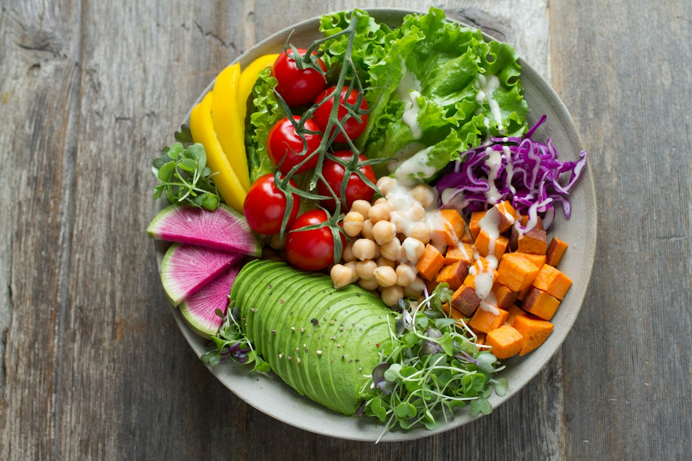

มื้อที่ใช่
ในเวลาที่สมดุล.
ให้ธาตุทั้งห้าเป็นแรงบันดาลใจในทุกมื้อ
ค้นพบเมนูที่เข้ากับคุณ และร้านดี ๆ ใกล้ตัว

木 火 土 金 水己 · ดินหยิน
丁酉 · ยามธาตุไฟ
Asia/Bangkok · เวลานาฬิกาท้องถิ่น火 · ชวนสำรวจธาตุไฟ
กติกาจับคู่เชิงสัญลักษณ์ของแอปวันนี้ กินอะไรดี?
ภาพเป็นภาพประกอบ • เมนูแนะนำเป็นไอเดียอาหาร ไม่ใช่รายการขายที่ยืนยันจากร้าน • หากแพ้อาหาร ให้สอบถามวัตถุดิบและการปนเปื้อนกับร้านทุกครั้ง
Mix & Match จัดมื้อจากร้านประจำ
ใช้ตัวกรองมังสวิรัติและวัตถุดิบด้านบนร่วมกัน • เมื่อตั้งงบ จะใช้เฉพาะราคา THB ที่ทราบ • หากกรองวัตถุดิบ จะตัดเมนูที่ส่วนผสมไม่ครบออก แต่ไม่รับประกันการปนเปื้อน
ธาตุของเมนูคาดจากคำในชื่อและวัตถุดิบ หรือค่าที่คุณกำหนด ไม่ใช่คุณสมบัติทางการแพทย์ • ราคาที่ต้นทางระบุ ไม่ยืนยันราคาหน้าร้านหรือสต็อกสาขา ณ เวลาสั่ง
ร้านประจำของฉัน 0
ค้นหาเมนู ราคา และข้อมูลวัตถุดิบจากแหล่งสาธารณะให้เอง • ทุกรายการมีแหล่งอ้างอิง
อัปเดตข้อมูลเรียบร้อย · ดูเมนูและแหล่งอ้างอิงได้ที่ร้านประจำ
ร้านและเมนูบันทึกบนบัญชีของเว็บไซต์นี้ ข้ามอุปกรณ์ได้ • 7-11 ดึงแค็ตตาล็อกเมื่อบันทึกและตรวจซ้ำเมื่อครบ 6 ชั่วโมง • ร้านอื่นเข้าคิวรีเสิร์ชที่ตรวจทุกชั่วโมง ข้อมูลที่ยังไม่พบจะไม่ถูกแต่งขึ้น
ร้านรอบตัวคุณ ⌖
เลือกตำแหน่งเพื่อดูร้านจริงจาก OpenStreetMap
ค้นหาร้านบน Google Maps ↗ข้อมูล © OpenStreetMap contributors • ระยะทางเส้นตรง • ไม่ยืนยันเวลาเปิด ราคา เมนู หรือจำนวนที่นั่งแบบสด
行
สมดุล เริ่มจากมื้อเล็ก ๆ
ใช้ BaZi เป็นมุมมองทางวัฒนธรรมในการเลือกอาหาร
ความชอบ วัตถุดิบ และข้อจำกัดด้านสุขภาพของคุณสำคัญเสมอ